GR-2: A Generative Video-Language-Action Model with Web-Scale Knowledge for Robot Manipulation
1. Quick overview of the paper
| Reading targeting item | compact conclusion |
|---|---|
| What should the paper solve? | Under the condition that real robot data is expensive and tasks and scenarios vary greatly, train a general robot strategy that can perform multiple manipulation skills through language instructions and can be transferred to unseen scenes. |
| The author's approach | First let the GPT-style transformer predict future videos on large-scale text-video data to obtain environmental dynamics and semantic priors; then simultaneously predict future images and action trajectories on the robot trajectory, and use WBC to deploy to real robots. |
| most important results | In 105 real desktop tasks, Simple setting reached 97.7% success rate; the average success rate of bin picking increased from 33.3% of GR-1 to 79.0%; the success rate of CALVIN 5th company mission increased from 73.1% of GR-1 to 85.9%. |
| Things to note when reading | The core of the method is not to simply "use a large model to make a robot", but to retain the video generation target as a companion task for action prediction; at the same time, the paper does not disclose the complete training hyperparameters and code, and the focus of reproducibility should be on data scale, tokenization, cVAE action head, and WBC deployment interface. |
Difficulty rating: ★★★★☆. You need to be familiar with language-conditioned robot policy, VQGAN discrete visual token, GPT-style autoregressive modeling, conditional VAE action chunking, and the deployment link from Cartesian trajectory to joint action in real robot control.
Keywords: generalist robot manipulationvideo generative pre-trainingvideo-language-actionaction trajectory predictionwhole-body control
Core contribution list
- Scaled video pre-training.The author expanded the 0.8M pre-training video used by GR-1 to 38M text-video clips, about 50B tokens; this allows the model to learn "given text and the current frame, how the future visual state should evolve" before fine-tuning the robot.
- Video-language-action joint strategy.GR-2 does not only predict actions on robot data, but also predicts future multi-view images and action trajectories at the same time; the paper regards this as a key structural design for lossless transfer of knowledge from video generation to robot action learning.
- Real robot multitasking and industrialized bin picking verification.The author uses 105 desktop tasks, 94K bin-picking trajectories, 122 evaluation objects and the CALVIN benchmark to demonstrate the model's multi-task learning, generalization and long sequence capabilities.
- The deployment layer introduces WBC.The model outputs a Cartesian action trajectory, which is then converted into 200 Hz low-level joint actions through trajectory optimization and whole-body control, covering the smoothing, collision and manipulability constraints of real robot operation.
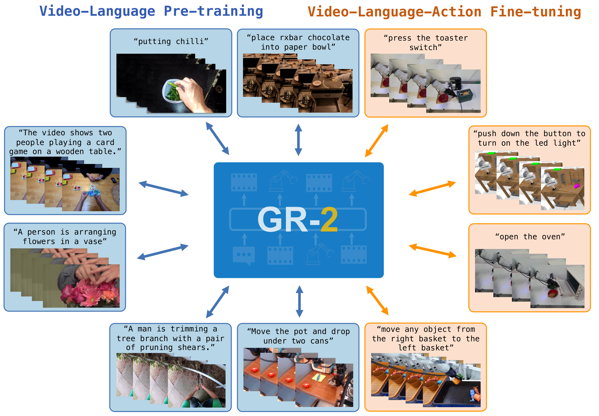
2. Motivation
2.1 Problems to be solved
The paper sets the goal as language-conditioned visual robot manipulation: Humans give tasks in natural language, and the same strategy directly outputs a future action trajectory based on language, historical observations, and robot status. The author chose language conditions because natural language is one of the most flexible interfaces for humans to assign tasks to robots.
The real bottleneck is the high cost of robot data collection and slow system expansion. For a robot capable of 100 tasks, if each task requires a large number of real trajectories, data acquisition will become a major limitation. The paper clearly emphasizes that GR-2 can still learn 100+ tasks with 1/8 the amount of data, that is, an average of about 50 trajectories per task, which is the key motivation for its "rapid adaptation to new tasks".
2.2 Limitations of existing methods
The paper locates the limitations of the previous work from two directions. First, many generalist robot policies rely on specialized signals such as large-scale robot data or target images, 3D information, and hierarchical planning; these methods can improve task coverage, but are still limited by robot data scale or deployment conditions. Second, although existing methods of borrowing knowledge from non-robotic domains use web-scale vision-language models or mixed data training, the author believes that Environmental dynamics in video It is especially important for action prediction, so pure visual representation pre-training does not fully match action learning.
Compared with GR-1, the in-paper comparison of GR-2 is more specific: GR-1 has tried video generative pre-training, but the pre-training video is only 0.8M; GR-2 has been expanded to 38M, and the new model structure allows the pre-training knowledge to continue to participate in video prediction and action prediction when the robot is fine-tuning.
2.3 High-level ideas of this article
The core insight is: if the model can predict "how the visual world will change in the next period" based on language and the current visual state, then this predicted visual trajectory can become an implicit plan for action generation. GR-2 therefore does not treat video generation only as a pre-training task, but continues to predict future images and action trajectories simultaneously during the robot fine-tuning phase.
4. Detailed explanation of method
4.1 Problem Definition
The paper writes the strategy as an end-to-end function of language conditions. Given the language instruction $l$, the past $h$ step environment observation $\mathbf{o}_{t-h: t}$ and the robot state $\mathbf{s}_{t-h: t}$, the strategy outputs the future $k$ action trajectory starting from the current moment:
This formula is saying: The strategy is not to predict a single action, but to generate a future action at once based on language, visual history and robot state.
$$\mathbf{a}_{t: t+k} = \pi(l, \mathbf{o}_{t-h: t}, \mathbf{s}_{t-h: t})$$| $l$ | Natural language instructions, such as "press the toaster switch." |
| $\mathbf{o}_{t-h: t}$ | Historical visual observation sequence; from two perspectives of head camera and hand camera in real robots. |
| $\mathbf{s}_{t-h: t}$ | Sequence of robot states, including end-effector position, rotation, and binary gripper state. |
| $\mathbf{a}_{t: t+k}$ | A Cartesian action trajectory in the future, rather than a single low-level joint control quantity. |
4.2 Two-stage training
Stage 1: Video generative pre-training.GR-2 is a GPT-style transformer. The pre-training input is tokenized text and image sequence, and the output is discrete tokens of future images; these tokens are then decoded into future frames by the VQGAN decoder. The pre-training data consists of 38M video clips and about 50B tokens compiled by the author. The sources include HowTo100M, Ego4D, Something-Something V2, EPIC-KITCHENS, Kinetics-700, and public robot data such as RT-1 and Bridge.

Phase 2: Robot data fine-tuning.During fine-tuning, the output of GR-2 becomes a joint prediction of future images and action trajectories:
This goal binds "imagining future visual states" and "performing actions" in the same model.
$$\pi(l, \mathbf{o}_{t-h: t}, \mathbf{s}_{t-h: t}) \rightarrow \mathbf{o}_{t+1}, \mathbf{a}_{t: t+k}$$| $\mathbf{o}_{t+1}$ | Future images; In multi-view robot data, future images are predicted from each view. |
| $\mathbf{a}_{t: t+k}$ | Action trajectory generated by conditional VAE. The paper says that empirically trajectory generation is more critical to smoothness and real-time performance than single-step actions. |
4.3 Input encoding and output headers
- Language: Use the frozen text encoder to encode instructions; the paper cites the CLIP text encoder.
- Image: Use VQGAN to convert each frame of image into a discrete visual token; VQGAN is trained on Internet data and robot domain data, and is frozen during the training process.
- Robot status: End-effector position, rotation, and gripper state are encoded through trainable linear layers.
- Action: Action trajectory is generated by conditional VAE and supports action multi-modality and chunked prediction.
4.4 Real robot deployment
The hardware system is a 7-DoF Kinova Gen3 robotic arm and a Robotiq 2F-85 gripper, equipped with two cameras: a static head camera that provides an overall view of the workspace, and an end-effector camera that provides an interactive view near the gripper. After GR-2 outputs the Cartesian trajectory, the author uses the Whole-Body Control algorithm to perform trajectory optimization and real-time motion tracking. This process incorporates optimizations for trajectory smoothness, continuity, collision constraints, and manipulability, and performs low-level joint actions at 200 Hz.
5. Experiments and results
5.1 Overview of experimental setup
| experiment | Data/Task | Assessment objectives | key figures |
|---|---|---|---|
| Real-world multi-task learning | 105 desktop tasks, 8 types of skills; about 40K teleoperation trajectories, an average of 400 items/task; and 1/8 data version of about 50 items/task. | Multi-task learning, distractor robustness, unseen background/environment/operation generalization. | Simple setting 97.7%; Unseen Backgrounds 71.4%; Unseen Environments 71.7%; Unseen Manipulation 55.8%. |
| End-to-end bin picking | 55 training objects, ~94K pick-and-place trajectories; 122 objects evaluated, 67 not seen in training. | Industrial hybrid object grasping, generalization of seen/unseen/cluttered. | The average success rate ranges from 33.3% for GR-1 to 79.0% for GR-2. |
| CALVIN benchmark | ABCD-D split, 34 tasks, 20K+ demonstrations; 1000 5-task instruction chains. | Simulate long sequences of language conditional operations. | 1-task success 98.6%; 5-task success 85.9%; average length 4.64. |
| Scaling | GR-2-S/B/L/XL four sizes. | Whether pre-training video loss and real robot success rate improve with model size. | The trainable parameters are 30M, 95M, 312M, and 719M; the default GR-2 total parameters are 230M, of which 95M are trainable. |
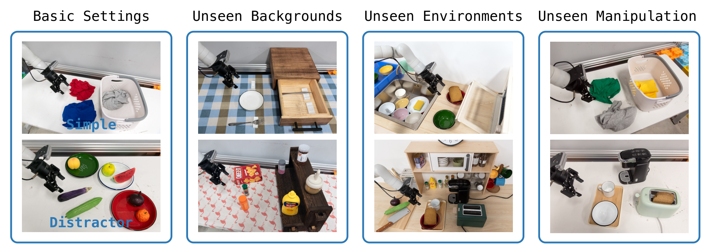
5.2 Real-World Multi-Task Learning
The tasks cover eight types of skills: picking, placing, uncapping, capping, opening, closing, pressing, and pouring. The author also performs data enhancement in fine-tuning: when inserting new objects, the diffusion model is trained and combined with self-collected object data and Open Images; when changing the background, SAM is used to segment the background, and then the video generation model is used to generate augmented video that maintains the motion of the robot.
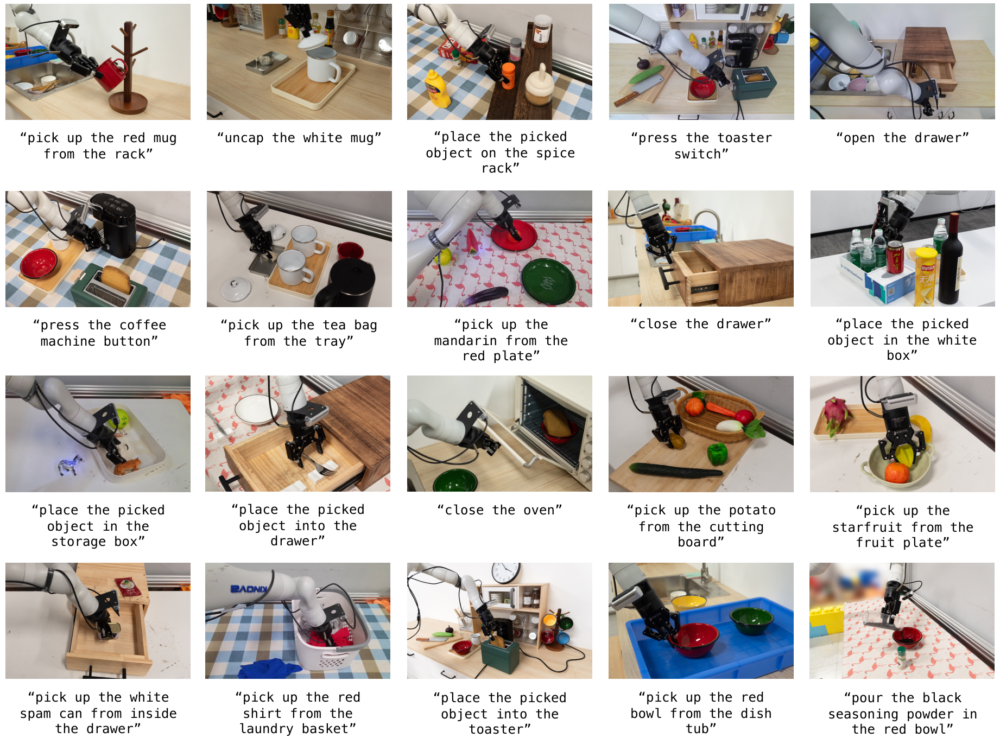
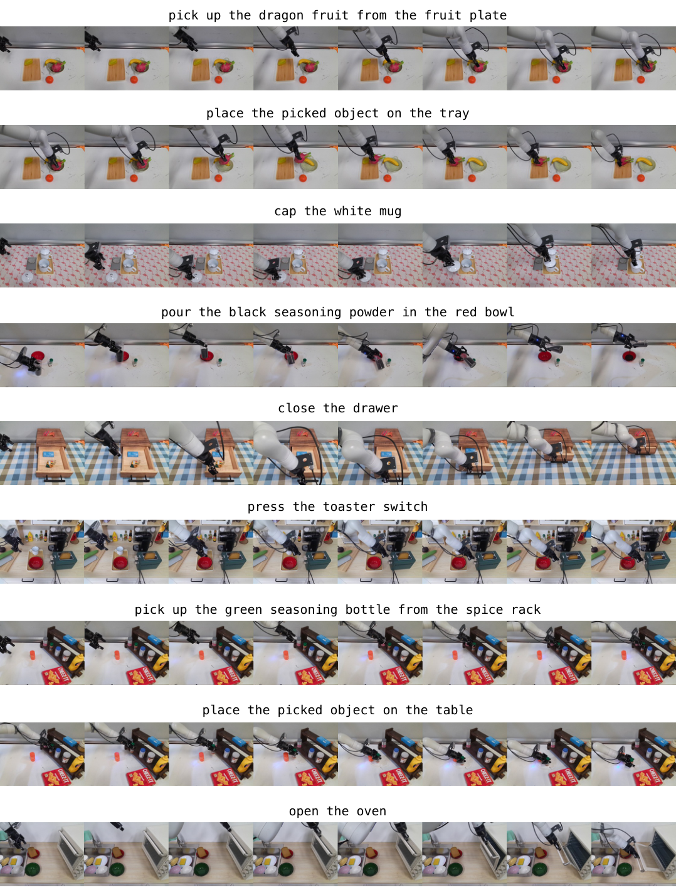
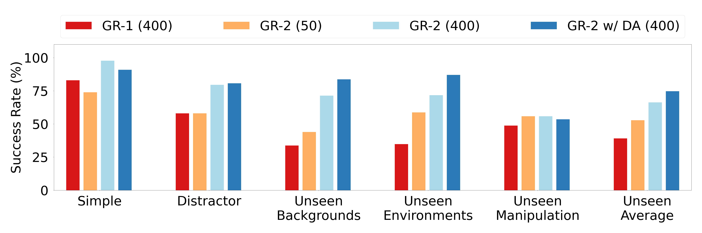
The failure cases highlighted in the paper mainly occur in Unseen Manipulation: the model may be unable to grasp unseen objects of new shapes, or select the wrong target object when the instruction requires grasping an unseen object. This failure mode is also pointed by the authors in future work to "improve the generalization and robustness of unseen manipulation".
5.3 End-to-End Bin Picking
The bin picking task uses fixed language instructions move any object from the right basket to the left basket.. There are 55 objects and about 94K trajectories in the training phase; the evaluation phase contains 122 objects, divided into four settings: Seen, Unseen, Cluttered Seen, and Cluttered Unseen. The Cluttered setting increases the number of objects in the source basket to about twice the training setting, so even objects seen constitute out-of-distribution density.
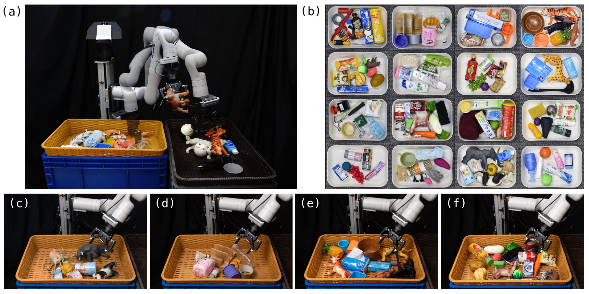
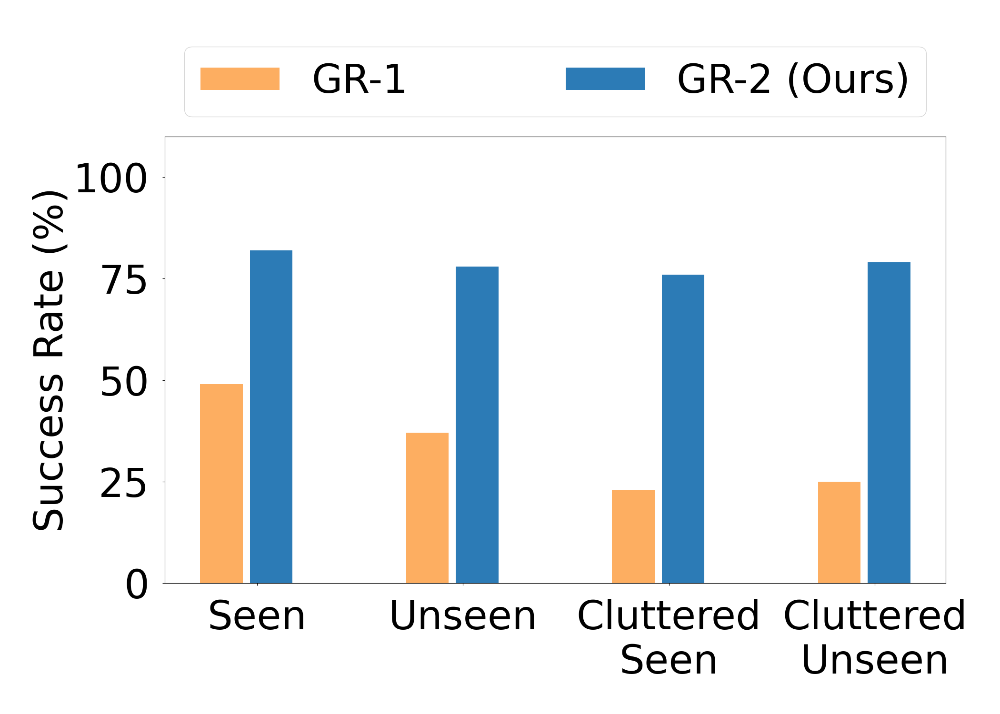

5.4 CALVIN Benchmark
CALVIN evaluates a long sequence of language conditional operations. The author tested 1000 instruction chains on the ABCD-D split, each requiring the completion of 5 tasks in a row. Comparing GR-2 with RT-1, MT-ACT, HULC, RoboFlamingo, and GR-1, the paper reports that its 1-task success ranges from 94.9% to 98.6% of GR-1, 5-task success ranges from 73.1% to 85.9%, and average length ranges from 4.21 to 4.64.
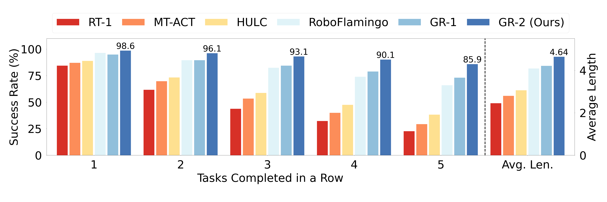
5.5 Autoregressive Video Generation
This experimental part is not just to show "the video looks good", but to illustrate the alignment of the future video output by the model with the real rollout. The explanation given by the author is that action prediction is like "replaying" the video trajectory predicted by the model itself; therefore, continuous improvement of video generation may become a path to improve action prediction.
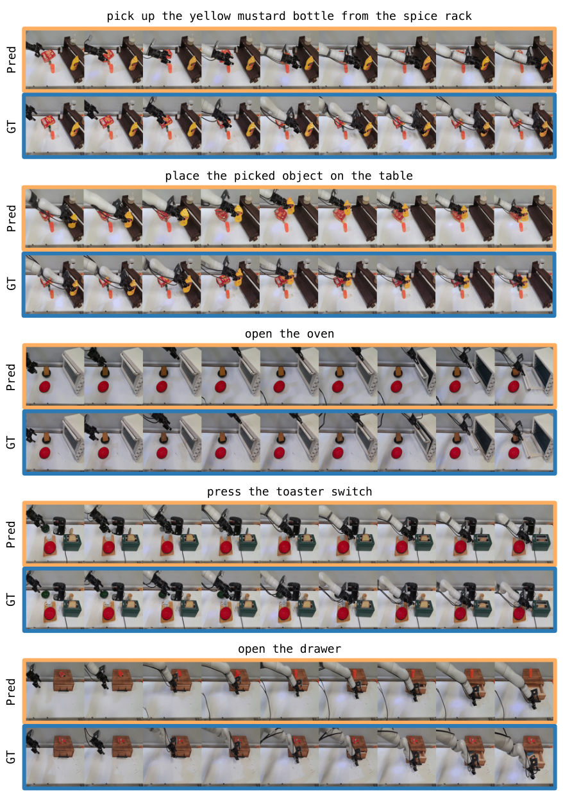
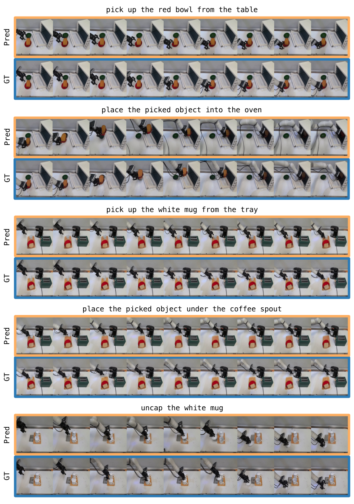
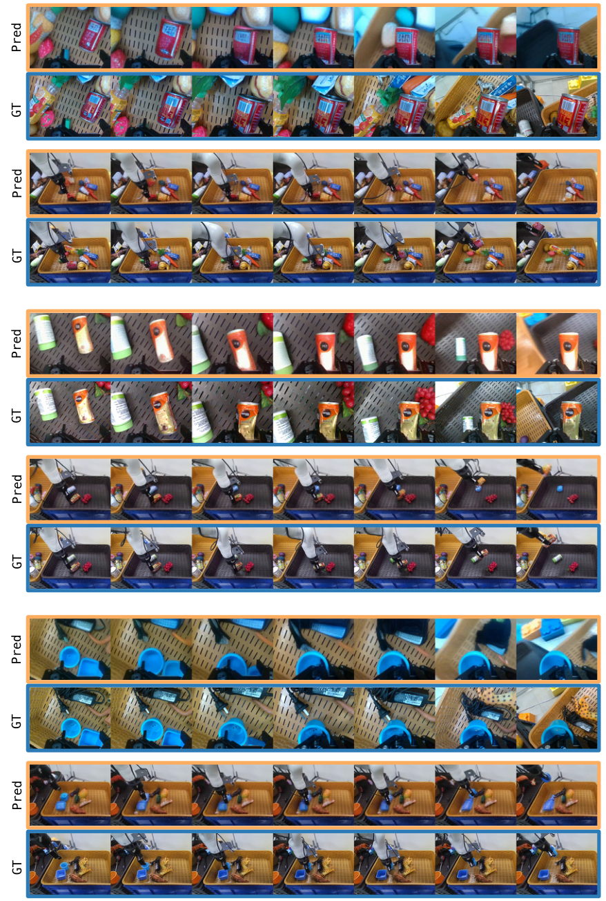
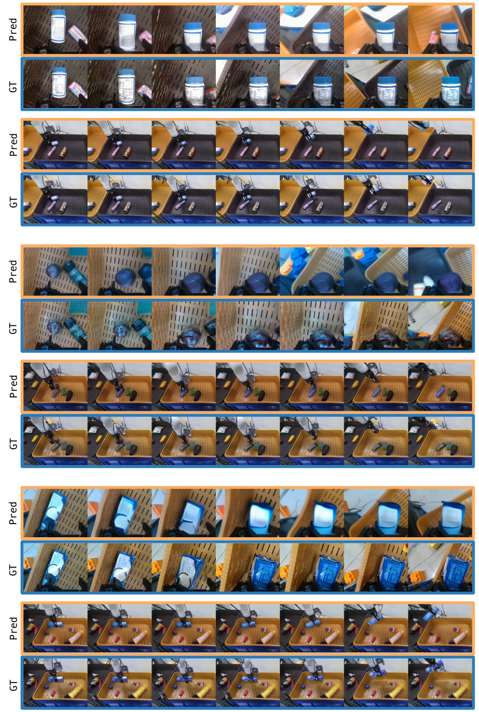
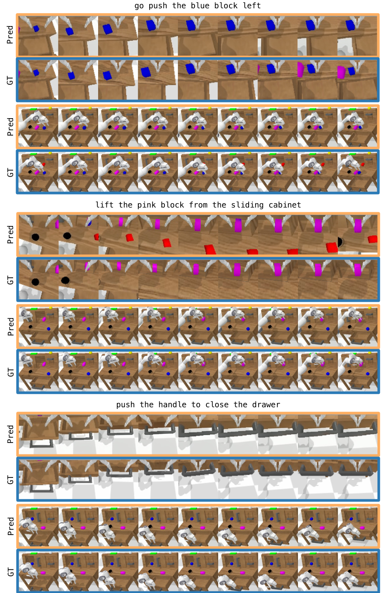
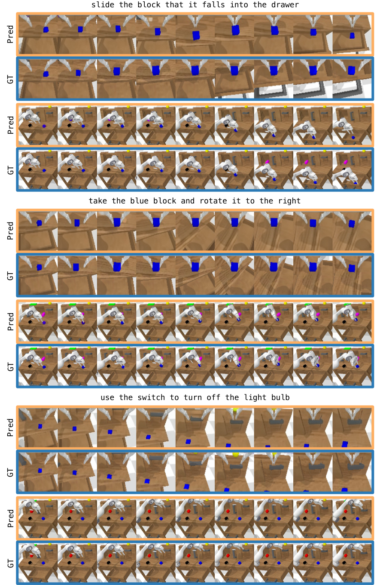
5.6 Scaling
The author pre-trained four model sizes: GR-2-S, GR-2-B, GR-2-L, and GR-2-XL, with corresponding trainable parameters of 30M, 95M, 312M, and 719M. Figure 17 shows that the video prediction validation loss on the Ego4D, RT-1 and robot data validation sets decreases with the model scale; the real robot success rate after fine-tuning also increases with the scale. Based on this, the paper shows that GR-2 has a scaling trend at both ends of video generation and action prediction.
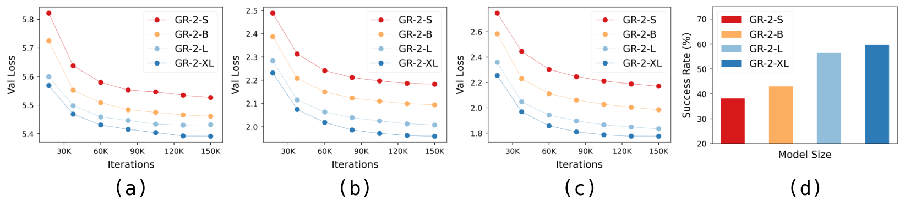
6. Analysis and discussion within the paper
6.1 Explanation of results given by the author
- Video pre-training aids action prediction.The author regards video as a source of environmental dynamics and state evolution under text conditions; the pre-trained model can transfer this dynamic prior to action prediction in robot fine-tuning.
- Multiple views and trajectory output are important for real robots.GR-2 processes both head/hand perspectives and outputs action trajectory; the paper states that trajectory output is more critical to smoothness and real-time performance than single-step action.
- Data augmentation improves unseen generalization.In multi-task experiments, GR-2 w/ DA achieved 87.0% in Unseen Environments and averaged 74.7% across three generalization settings.
- Video prediction is related to action prediction.The authors observed that the generated video aligned with the real rollout and considered the actions to be like executing the predicted trajectory in the video.
6.2 Failure and future direction clearly written by the author
The paper clearly states that Unseen Manipulation remains difficult. Typical failures include the inability to grasp an unseen object in a new shape and the incorrect selection of a different object when instructed to grasp an unseen object. In Conclusion, the author focuses on improving the generalization ability and robustness of action prediction to unseen manipulation in the future.
7. Analysis, Limitations and Boundaries
7.1 The most valuable part of this paper
Judging from the evidence of the paper itself, the core value lies in the web-scale text-video generative pre-training and real-robot action trajectory learning The same training link is made and is not only verified in simulations or small-scale tasks. The author uses 38M video pre-training, 105 real desktop tasks, 94K bin-picking trajectories, CALVIN long sequence benchmark and model scaling to jointly support this design.
7.2 Why the results hold up
The results of the paper are supported by four types of complementary evaluations: first, multi-task real robot experiments cover Simple, Distractor and three types of OOD settings; second, bin picking performs industrial-style evaluation of seen/unseen/cluttered objects; third, CALVIN provides public benchmark comparison; fourth, scaling curve simultaneously checks video generation loss and robot success rate. The key value is not a single indicator: 97.7%, 79.0%, 85.9%, 4.64, and 74.7% respectively correspond to different task forms.
7.3 Author's statement of limitations
- Unseen Manipulation is still weaker than other settings.The main text reports that GR-2 is 55.8% in Unseen Manipulation, and lists two types of failures: failure to grasp new-shaped objects and failure to select the wrong unseen target object.
- The robustness of action prediction still needs to be improved in the future.Conclusion clearly places future direction on stronger generalization and more robust action prediction, especially unseen manipulation.
- The paper does not provide appendices.No appendix Therefore, the complete hyperparameters, model layer number, loss weight, cVAE details, WBC optimization goals and training engineering details are not fully expanded in the source code text.
7.4 Applicable boundaries
The experimental boundaries of GR-2 are mainly language-conditioned visual operations, desktop real robots, bin picking, and CALVIN simulation long sequence tasks. The paper does not prove that this method can be directly transferred to different robot arm shapes, mobile operations, large-scale navigation, strong contact assembly, or tasks that require fine force control; the WBC section explains that real deployment considers collision and manipulability, but does not give the derivation of a complete control algorithm.
8. Reproducibility Audit
| recurring elements | Information given in the paper | Audit status |
|---|---|---|
| Paper source code and diagrams | arXiv provides LaTeX source code; this report has extracted and converted all individual images from the source code. | Checkable |
| data | The sources and scale of pre-training data are given: HowTo100M, Ego4D, SSV2, EPIC-KITCHENS, Kinetics-700, RT-1, Bridge, totaling 38M clips; real robot multi-task 40K trajectories, bin picking 94K trajectories. | Partially reproducible; self-collected data not made public |
| Model structure | GPT-style transformer, frozen text encoder, frozen VQGAN, state linear layers, cVAE action trajectory head; default model 230M parameters, 95M trainable. | Moderate; lacks full level configuration |
| training objectives | Pre-training predicts future image tokens; fine-tuning predicts future images and action trajectories simultaneously. | The goal is clear; the loss weight and training schedule are missing |
| deploy | Kinova Gen3 + Robotiq 2F-85, head/hand cameras, WBC perform joint actions at 200 Hz. | System description is clear; WBC formulas and engineering details are insufficient |
| code | The paper and arXiv metadata are only given to the Project Page; no official GitHub code repository was found in this search. | The code cannot be directly reproduced |